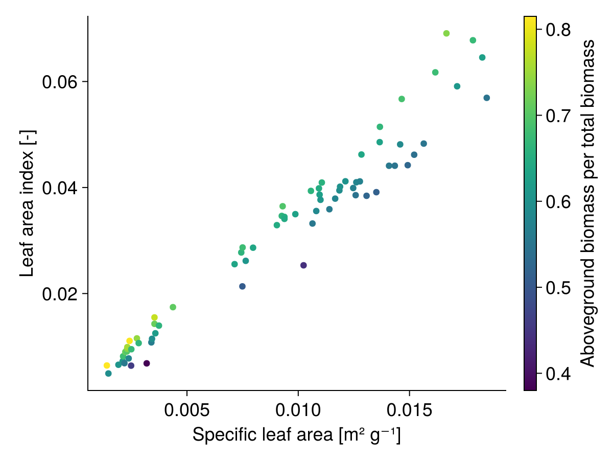

Potential growth
GrasslandTraitSim.potential_growth! — Functionpotential_growth!(; container, biomass, PAR)
Calculate the total potential growth of the plant community.
\[\begin{align*} G_{pot, txy} &= PAR_{txy} \cdot RUE_{max} \cdot fPARi_{txy} \\ fPARi_{txy} &= \left(1 - \exp\left(-k \cdot LAI_{tot, txy}\right)\right) \cdot \frac{1} {1 + \exp\left(\beta_{comH} \cdot \left(\alpha_{comH} - H_{cwm, txy}\right)\right)} \end{align*}\]
Parameter, see also SimulationParameter:
- $RUE_{max}$ (
RUE_max) maximum radiation use efficiency [kg MJ⁻¹] - $k$ (
k) extinction coefficient [-] - $\alpha_{comH}$ (
α_com_height) is the community weighted mean height, where the community height growth reducer is 0.5 [m] - $\beta_{comH}$ (
β_com_height) is the slope of the logistic function that relates the community weighted mean height to the community height growth reducer [m⁻¹]
Variables:
- $PAR_{txy}$ (
PAR) photosynthetically active radiation [MJ ha⁻¹] - $LAI_{tot, txy}$ (
LAItot) total leaf area index, seecalculate_LAI![-]
Output:
- $G_{pot; txy}$ (
potgrowth_total) total potential growth of the plant community [kg ha⁻¹]
Note: The community height growth reduction factor is the second part of the $fPARi_{txy}$ equation.


GrasslandTraitSim.calculate_LAI! — Functioncalculate_LAI!(; container, biomass)
Calculate the leaf area index of all species.
\[\begin{align} LAI_{txys} &= B_{txys} \cdot SLA_s \cdot \frac{LBP_s}{ABP_s} \\ LAI_{tot, txy} &= \sum_{s=1}^{S} LAI_{txys} \end{align}\]
Variables:
- $B_{txys}$ (
biomass) biomass of each species [kg ha⁻¹] - $SLA_s$ (
sla) specific leaf area [m² g⁻¹] - $LBP_s$ (
lbp) leaf biomass per plant biomass [-] - $ABP_s$ (
abp) aboveground biomass per plant biomass [-]
There is a unit conversion from the $SLA_s$ and the biomass $B_{txys}$ to the unitless $LAI_{txys}$ involved.
Output:
- $LAI_{txys}$ (
LAIs) leaf area index of each species [-] - $LAI_{tot, txy}$ (
LAItot) total leaf area index of the plant community [-]
